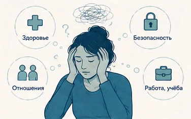
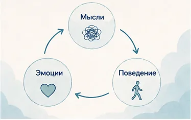
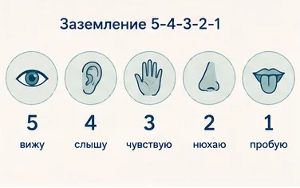
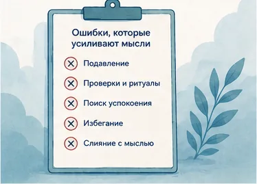

Главная → Блог → Навязчивые мысли
Навязчивые мысли: почему появляются и 7 способов их остановить
Обновлено: 01.07.2026 · 8 минут чтения
Навязчивые мысли — это непрошеные, повторяющиеся мысли, образы или импульсы, которые всплывают сами собой и вызывают тревогу. Время от времени они бывают почти у каждого человека и сами по себе не опасны. Главное правило: с навязчивыми мыслями не нужно бороться напрямую — чем сильнее их прогонять, тем настойчивее они возвращаются. Ослабить их власть помогает противоположный подход: научиться не вступать с ними в спор.
Что такое навязчивые мысли
Знакомо состояние, когда мысли лезут в голову, крутятся по кругу и не дают покоя? Когда одна и та же тревожная мысль возвращается снова и снова, как её ни прогоняй? Это и есть навязчивые мысли.
Навязчивая мысль — это та, что приходит без приглашения, цепляется и упорно возвращается, как бы вы ни старались её отпустить. Она может быть в форме слов («а вдруг я заболел»), пугающего образа или внезапного импульса. Ключевая особенность — мысль воспринимается как чужая, неприятная и «не моя», и именно поэтому вызывает тревогу.
Важно различать две похожие, но разные вещи:
- Навязчивые мысли (обсессии) — внезапные вспышки: «а что если я сделаю что-то ужасное», «вдруг я не выключил утюг», нежеланные образы или сомнения. Они появляются на ровном месте и пугают своим содержанием.
- Руминация (мысленная жвачка) — бесконечное прокручивание одного и того же по кругу: разбор прошлого разговора, «а надо было сказать иначе», прокрутка тревожных сценариев будущего. Здесь нет вспышки — есть зацикленность.
Запомните главное: мысль — это не поступок и не желание. Пугающие навязчивые мысли появляются как раз потому, что противоречат вашим ценностям. Спокойному и равнодушному человеку такая мысль не была бы неприятна — она тревожит именно тех, кому это важно. Наличие мысли ничего не говорит о вас как о человеке.
Какие бывают навязчивые мысли
Навязчивые мысли могут касаться чего угодно, но чаще всего они «выбирают» самые важные и уязвимые для человека темы. Узнать свою тему полезно: становится видно, что вы не одни и что подобные мысли — типичны и хорошо изучены.

Самые частые темы навязчивых мыслей:
- Здоровье и болезни — «а вдруг я серьёзно болен», бесконечная проверка симптомов и ощущений в теле.
- Смерть — навязчивый страх собственной смерти или смерти близких.
- Причинение вреда — пугающие импульсы «вдруг я наврежу себе или близким», хотя желания этого нет и в помине.
- Безопасность и контроль — «выключил ли утюг», «закрыл ли дверь», постоянные перепроверки.
- Отношения — навязчивые сомнения «тот ли это человек», «а люблю ли я по-настоящему».
- Заражение и чистота — страх грязи, микробов, заразиться.
- Религиозные и моральные мысли — «неправильные» или кощунственные мысли и чувство вины за них.
- Страх сойти с ума или потерять контроль над собой.
- Ошибки прошлого — прокручивание стыдных моментов и сказанного «не так».
Какой бы пугающей ни была тема, сам факт навязчивой мысли не делает её правдой и ничего не предсказывает. Это просто мысль, которая зацепилась за важное.
Почему появляются навязчивые мысли
Мозг постоянно генерирует фоновый поток мыслей — десятки тысяч в день, и значительная часть из них случайные, странные или неприятные. Обычно мы их не замечаем. Навязчивыми они становятся тогда, когда мы придаём отдельной мысли особое значение и пугаемся её. Дальше включается замкнутый круг: мысль → тревога → попытка её прогнать → ещё больше внимания к мысли → она возвращается чаще.
Что повышает вероятность навязчивых мыслей:
- Стресс и тревога. На фоне повышенной тревоги мозг чаще выдаёт сигналы «опасности» и цепляется за угрожающие мысли.
- Усталость и недосып. Уставший мозг хуже фильтрует поток мыслей и сложнее переключается. На фоне переутомления и выгорания навязчивых мыслей становится больше.
- Перфекционизм и гиперответственность. Привычка всё контролировать и страх ошибки делают сомнения навязчивыми.
- Важность темы. Навязчивости почти всегда касаются того, что человеку дорого: здоровье, близкие, безопасность, репутация.
- Попытки подавить. Чем активнее «не думать» о мысли, тем прочнее она закрепляется (об этом — ниже).
Мифы о навязчивых мыслях
Вокруг навязчивых мыслей много страхов, которые только подливают масла в огонь. Разберём главные мифы.
- «Если мысль появилась — значит, она что-то значит». Нет. Мозг выдаёт тысячи случайных мыслей в день; появление мысли не делает её правдой и не отражает ваши желания.
- «Хорошие люди так не думают». Навязчивые мысли о плохом бывают у самых добрых и совестливых людей — именно поэтому они так пугают.
- «Если думать о плохом, оно случится». Мысли не управляют реальностью. Мысль о падении самолёта не роняет самолёт.
- «Чтобы избавиться, надо сильнее прогонять мысль». Наоборот: подавление усиливает навязчивость. Работает принятие, а не борьба.
- «Навязчивые мысли — это всегда ОКР». Эпизодические навязчивые мысли есть почти у всех и сами по себе не означают расстройства.
Навязчивые мысли, тревога и ОКР: в чём разница
Эпизодические навязчивые мысли — это норма, а не диагноз. Но иногда они становятся частью более серьёзного состояния. Разобраться помогает простое сравнение.
| Обычные навязчивые мысли | ОКР (обсессивно-компульсивное расстройство) | |
|---|---|---|
| Как часто | Время от времени, эпизодически | Постоянно, мысли захватывают надолго каждый день |
| Реакция | Поморщился, отвлёкся и забыл | Сильная тревога, которую нужно срочно снять |
| Ритуалы | Нет | Есть: проверки, мытьё, счёт, мысленные «нейтрализации» |
| Влияние на жизнь | Практически не мешают | Занимают больше часа в день, мешают работе и общению |
При ОКР навязчивая мысль (обсессия) вызывает такую тревогу, что человек выполняет ритуал (компульсию), чтобы её снять: перепроверяет дверь, моет руки, повторяет про себя «защитные» фразы. Облегчение короткое, и круг повторяется. Если вы узнаёте у себя именно такой механизм и он отнимает много времени — это повод обратиться к специалисту, ОКР хорошо поддаётся терапии.
Навязчивые мысли также часто идут рука об руку с тревожными расстройствами и паническими атаками — тогда работать стоит в первую очередь с тревогой в целом.
Как избавиться от навязчивых мыслей: 7 техник
Цель этих приёмов — не «выключить» мысли силой (это невозможно), а перестать подпитывать их вниманием и тревогой. Выберите два-три, которые откликаются, и практикуйте регулярно.
- Не вступайте в спор с мыслью. Когда приходит навязчивая мысль, не доказывайте ей, что она неправа, и не пытайтесь её прогнать. Отметьте про себя: «это просто навязчивая мысль» — и мягко верните внимание к тому, чем заняты. Вы не обязаны реагировать на каждую мысль.
- Отделите себя от мысли. Вместо «я ужасный человек» сформулируйте: «я замечаю, что у меня появилась мысль, будто я ужасный человек». Эта дистанция (приём из терапии принятия, ACT) показывает мозгу: мысль — это просто событие в голове, а не факт и не вы.
- Проверьте мысль фактами. Если мысль звучит как прогноз катастрофы, спросите себя по-научному: какие есть доказательства за и против? Это приём из когнитивно-поведенческой терапии (КПТ), где мысли, эмоции и поведение связаны, и, меняя отношение к мысли, мы влияем на тревогу.
- Выделите «время для беспокойства». Назначьте 15 минут в день, когда вы разрешаете себе тревожиться обо всём. Когда мысль приходит вне этого времени, скажите: «вернусь к тебе в 19:00». Часто к назначенному часу мысль уже теряет остроту.
- Вернитесь в настоящее. Навязчивости живут в прошлом и будущем. Техника заземления возвращает в «здесь и сейчас» через органы чувств: назовите 5 вещей, которые видите, 4 — которые слышите, 3 — которые можете потрогать, 2 запаха и 1 вкус.
- Выпишите мысли на бумагу. В голове мысли крутятся по кругу. На бумаге они конечны. Выпишите, что именно тревожит, и отметьте, на что вы реально можете повлиять, а что — вне вашего контроля и подлежит отпусканию.
- Не оставайтесь с этим один. Навязчивые мысли теряют силу, когда их проговариваешь вслух — становится видно, что это просто мысли. Если рядом нет человека, с которым хочется поделиться именно сейчас, можно проговорить это с ИИ-психологом — анонимно и в любое время.


Чтобы было проще действовать в момент, когда мысль накрывает, держите под рукой простую шпаргалку:
| Навязчивая мысль | Что делать |
|---|---|
| «Вдруг я забыл выключить утюг» | Не выполнять повторную проверку — она лишь укрепляет навязчивость |
| «А вдруг я серьёзно болен» | Опираться на факты и врача, а не на ощущения тела и поиск симптомов в интернете |
| «Вдруг я причиню кому-то вред» | Напомнить себе: мысль ≠ намерение; страх мысли как раз и доказывает, что вы этого не хотите |
| «Я прокручиваю это уже час» | Назвать процесс («это руминация»), переключиться на действие или заземление |
Мысли крутятся по кругу и не дают покоя? Поговорите с ИИ-психологом — тепло, анонимно, без осуждения и записи.
Начать разговор бесплатноКакие ошибки усиливают навязчивые мысли
Многое из того, что кажется «борьбой» с навязчивыми мыслями, на деле их подкармливает. Вот частые ловушки:

- Подавление мысли. Команда «не думай об этом» заставляет мозг постоянно проверять, не вернулась ли мысль — и она возвращается. Попробуйте прямо сейчас не думать о белом медведе.
- Поиск переуспокоения. Бесконечно переспрашивать близких «точно всё нормально?» или гуглить симптомы — даёт облегчение на минуту, но закрепляет навязчивость и тревогу.
- Ритуалы и проверки. Перепроверить дверь «ещё разок» кажется безобидным, но каждый ритуал говорит мозгу, что угроза реальна, — и тревога растёт.
- Слияние с мыслью. Вера, что «раз я подумал, значит, это что-то значит». Мысль о плохом не делает вас плохим и ничего не предсказывает.
- Избегание. Обходить ситуации, которые запускают мысли, — короткое облегчение и долгий рост тревоги. Это роднит навязчивости с тревогой в целом.
Когда обратиться к специалисту
С эпизодическими навязчивыми мыслями обычно удаётся справиться самостоятельно. Но есть сигналы, при которых важна помощь врача или психотерапевта:
- мысли занимают часы в день и серьёзно мешают работать, спать и общаться;
- появились ритуалы (проверки, мытьё, счёт), без которых тревога невыносима — признак ОКР;
- мысли держатся неделями и не отпускают, несмотря на все техники;
- навязчивости касаются причинения вреда себе или другим и сильно пугают;
- появляются мысли о том, что не хочется жить.
Навязчивые мысли и ОКР хорошо поддаются психотерапии — особенно КПТ и методу экспозиции с предотвращением реакции (ERP). Это не приговор, и с этим можно справиться.
Частые вопросы
Опасны ли навязчивые мысли и могу ли я сделать то, о чём думаю?
Сами по себе навязчивые мысли не опасны, и они почти никогда не приводят к действиям. Мысль — это не намерение и не желание: пугающие образы появляются именно потому, что противоречат вашим ценностям, и психика реагирует на них тревогой. Чем больше человек боится мысли, тем чаще она возвращается, но это говорит о вашей чувствительности, а не о реальной угрозе.
Почему чем сильнее я гоню навязчивую мысль, тем чаще она возвращается?
Это известный эффект: попытка не думать о чём-то заставляет мозг постоянно проверять, не появилась ли запретная мысль, и тем самым удерживает её в фокусе внимания. Подавление даёт короткое облегчение, но в долгую усиливает навязчивость. Поэтому работает не борьба, а противоположное — позволить мысли быть, не вступая с ней в спор.
Чем навязчивые мысли отличаются от ОКР?
Навязчивые мысли время от времени бывают почти у всех и обычно не нарушают жизнь. При обсессивно-компульсивном расстройстве (ОКР) такие мысли становятся постоянными и мучительными, а чтобы снять тревогу, человек выполняет ритуалы — проверки, мытьё, счёт, мысленные действия. Если мысли и ритуалы занимают больше часа в день и серьёзно мешают жить, стоит обратиться к специалисту.
Как избавиться от навязчивых мыслей перед сном?
Вечером отвлечений меньше, поэтому мысли крутятся сильнее. Помогает выписать тревоги на бумагу за пару часов до сна, выделить отдельное «время для беспокойства» днём и не решать проблемы в постели. Если уснуть не получается из-за прокручивания мыслей, используйте техники из статьи о бессоннице при тревоге.
Может ли стресс вызвать навязчивые мысли?
Да. На фоне стресса, тревоги и недосыпа мозг хуже фильтрует поток мыслей и чаще выдаёт тревожные сигналы, поэтому навязчивые мысли усиливаются. Часто они отступают сами, когда снижается уровень стресса и восстанавливается сон. Если же мысли не уходят даже после отдыха, помогут техники из этой статьи и работа с психотерапевтом.
Чем навязчивые мысли отличаются от обычных тревожных?
Тревожные мысли обычно касаются реальных забот и ощущаются как свои («успею ли я к дедлайну»). Навязчивые мысли воспринимаются как чужие, нелогичные и неприятные, всплывают против воли и пугают самим содержанием. При этом они часто идут вместе: тревога создаёт фон, на котором навязчивым мыслям легче закрепиться.
Можно ли полностью избавиться от навязчивых мыслей?
Полностью убрать любые навязчивые мысли нельзя — случайные странные мысли время от времени бывают у всех, это нормальная работа мозга. Но можно перестать их бояться и реагировать на них, и тогда они теряют силу и больше не мешают. Цель не в том, чтобы никогда не думать о плохом, а в том, чтобы такие мысли проходили мимо.
Не получается выбраться из круга мыслей в одиночку? ИИ-психолог поможет разложить их по полкам и вернуть себе спокойствие: тепло, анонимно, без осуждения.
Начать разговор бесплатноЧитать также
- Как справиться с тревогой: 8 техник, которые помогают — навязчивые мысли почти всегда идут вместе с тревогой.
- Бессонница при тревоге: почему не спится и что делать — если мысли крутятся именно перед сном.
- Паническая атака: что делать в момент приступа — когда тревога перерастает в приступ.
- Эмоциональное выгорание: 5 стадий и как восстановиться — переутомление часто усиливает навязчивые мысли.
Материал подготовлен командой AI Therapist и основан на доказательных подходах к работе с навязчивыми мыслями — когнитивно-поведенческой терапии (КПТ), терапии принятия и ответственности (ACT) и методе экспозиции (ERP). Статья носит просветительский характер и не заменяет консультацию специалиста.
Источники: NHS — обсессивно-компульсивное расстройство (ОКР) и навязчивые мысли; International OCD Foundation — об ОКР и навязчивых мыслях.